2018年7月4日，受害者佟广亮在亳州群康药业工地干活，当时正在下大雨，工地让受害者去室外作业，路边的电表箱漏电导致受害者经过时触电，被电击后当场停止呼吸，在经过很长时间被发现后，由于工地缺乏急救知识错过了黄金抢救时间，另外也没叫救护车而是开车将我受害者送到医院，经过近两个多小时的抢救后转入医院重症监护室紧急治疗，目前受害者仍在重症监护室救治，时间已经2个半月。
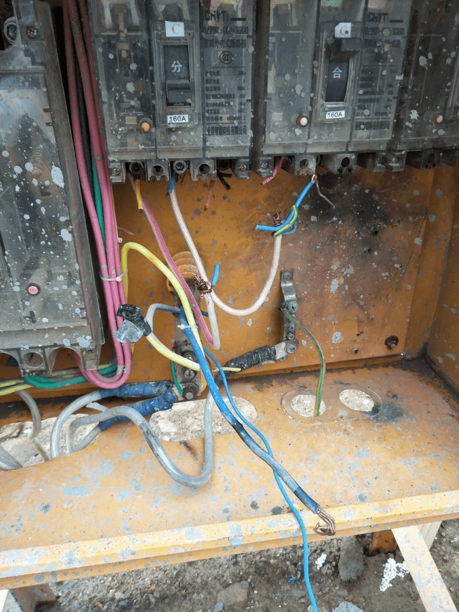 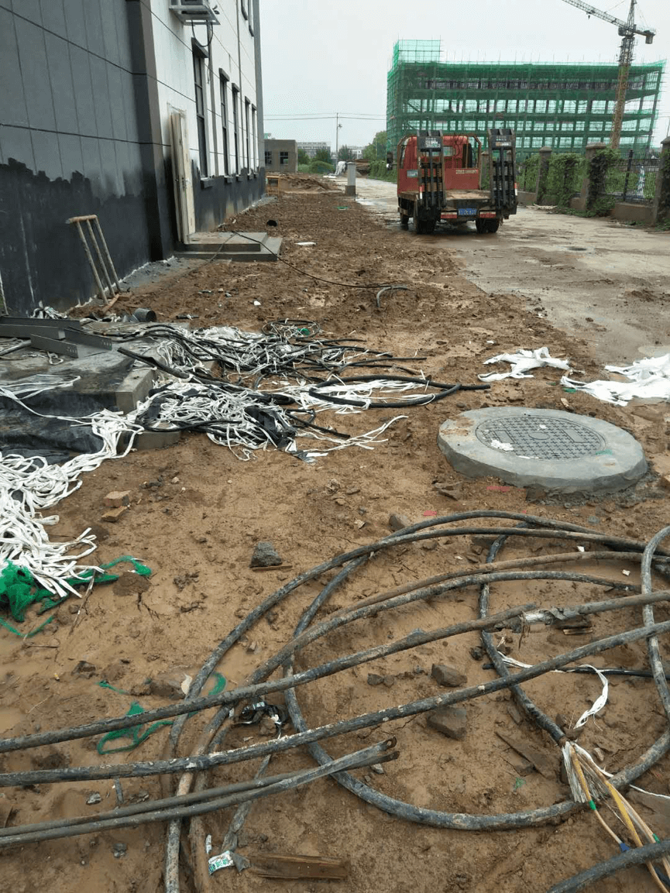据受害者家属反映，人成这样了俺们家的天都塌了。留下孤儿寡母和80多岁的老母亲以后咋活呀？出事以后的第二天工地的人到医院来，医院现场工地老板表态会全力救治我父亲，结果工地负责人从7月11日就骗我们说他去筹钱，之后就把我们家人电话全部拉黑了一直联系不上，最后我们被逼无奈之下，我们去了出事的工地要说法，工地老板出面给我们保证说不断治疗费用，善良的我们再次相信了他，换来的结果是付了几次医疗费以后又没影了。亳州群康药业不仅没来安抚过家属情绪，一直和自己的承包方之间相互推诿，把我们受害家属推到法院让我们去打官司，就是不想承担医疗费。后来答应和我们家属在事发地木兰派出所进行协商沟通，却屡次言而无信毫无诚意。人命关天的事情在他们的眼里真的如草芥，冷漠的太让人心寒了，全家人本来已经悲痛万分，工地竟然还在7月15日时找了一个自称“监狱刚出来，啥都不怕”的黑社会威胁我们，叫我们放弃治疗我父亲，说有钱也别浪费在医院，还说我们家人都住在那身份证号是多少，小孩子在哪里上学他都知道，还有没有天理了？还有没有王法了？ 亳州群康药业身为一个生产药品的企业，人命都不当回事，生产出来药那个老百姓敢吃吗？受害家属如今已身心疲惫，死的心都有。受害人佟广亮儿子说：联系方式18956786340。
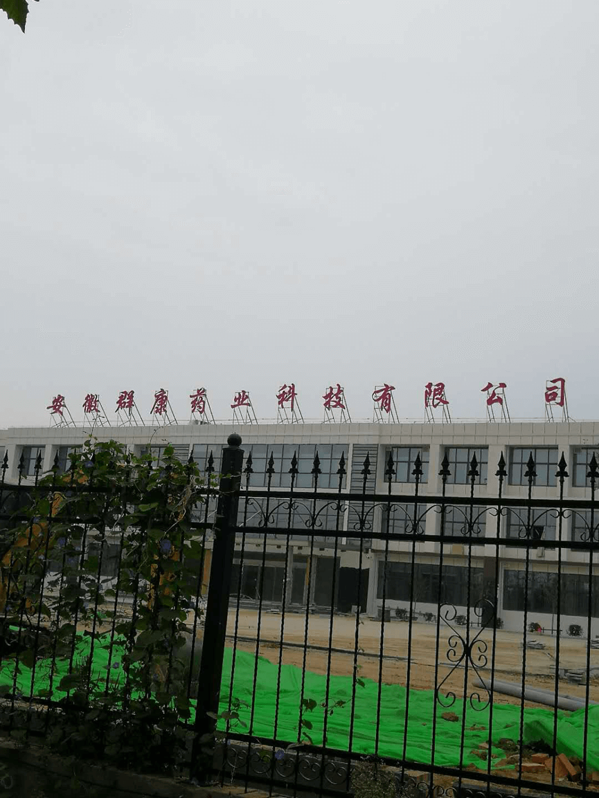如今医疗费断了一个多月，医院的药全部停了，营养液也停了，受害者逐渐消瘦了下来，身为家属看着心无比的痛！！！
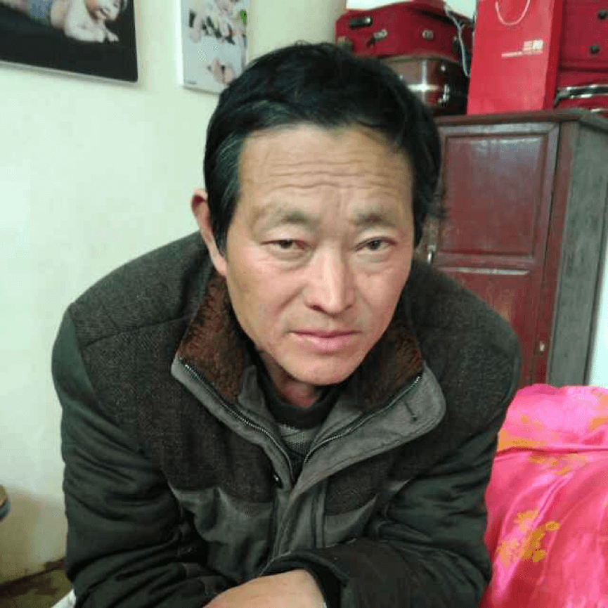 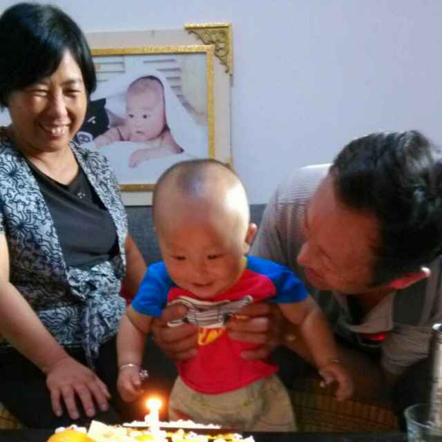政府部门在协调无果后让我们自己垫付医药费，身为一个普通家庭，受害者儿子还身有残疾不能干重活(左手掉了一个指头，右胳膊被机器齿轮绞过手伸不开)，那里能承担得起如此巨额的医疗费
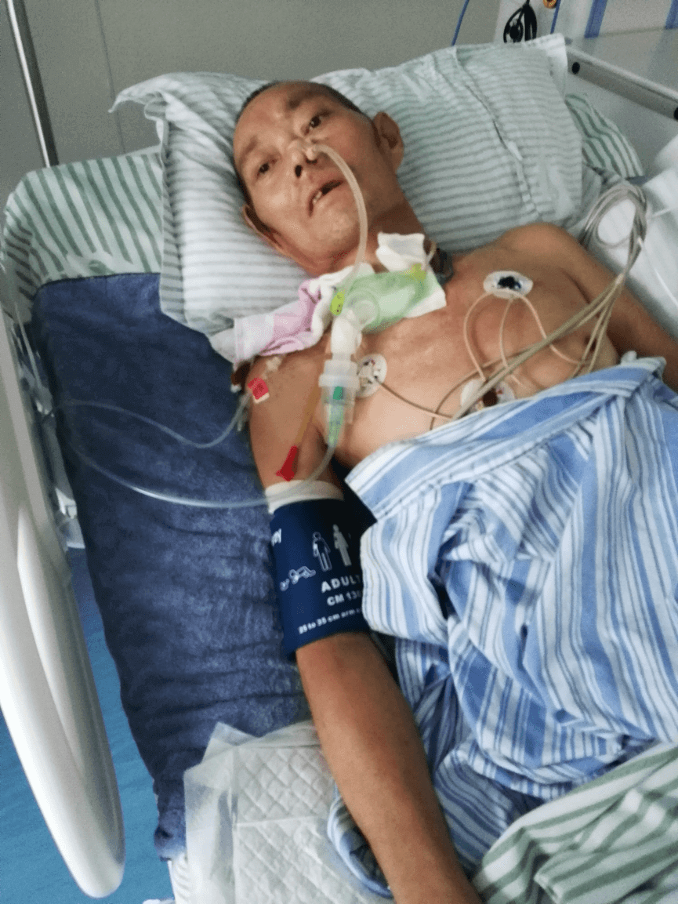 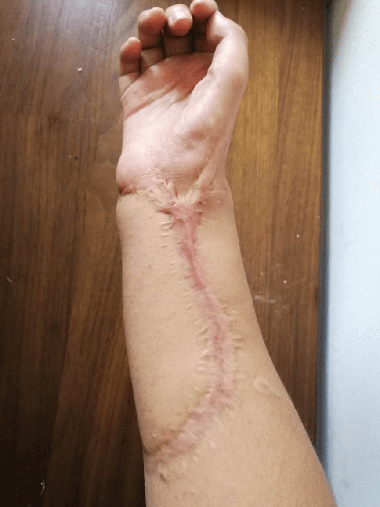受害人家属去群康药业工地要医疗费，结果群康药业找了十几个疑似社会人员的人穿着保安的衣服手持棍棒盾牌，把受害者的家属打了出来，还把受害者80多岁的老母亲的扔了出去
 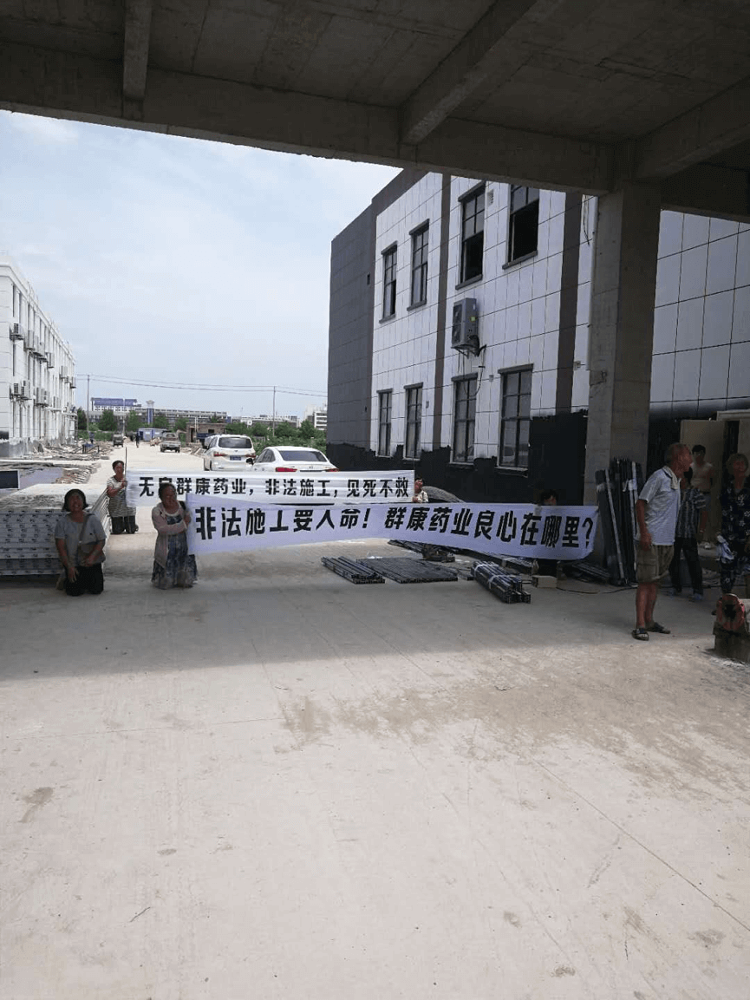
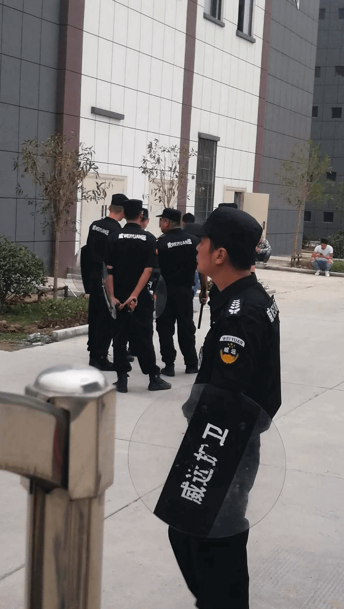
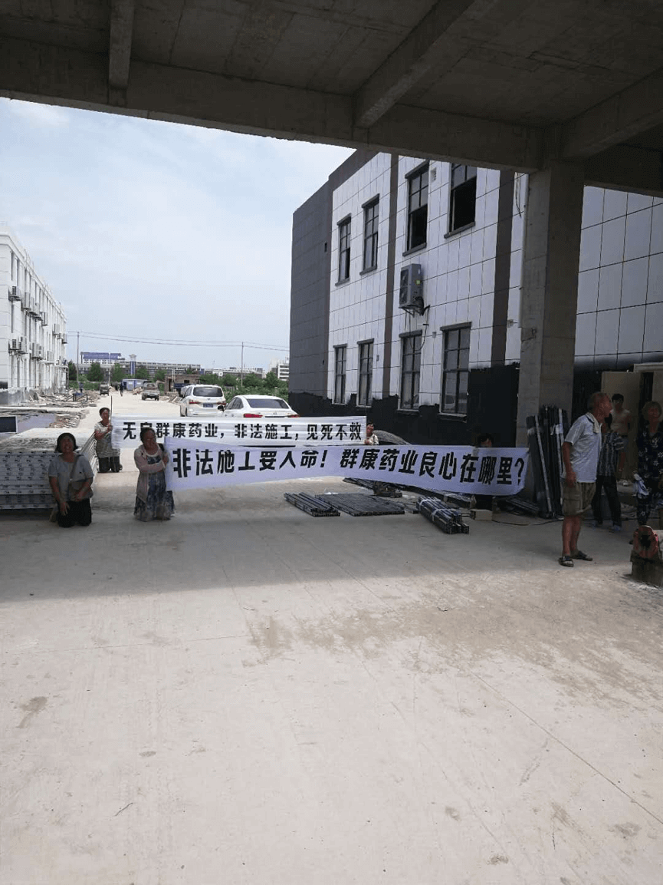
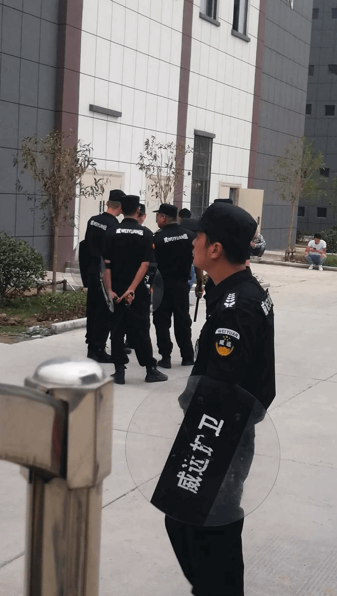
受害者是一名退伍军人，习大大之前说过让军人成为全社会尊崇的职业，试问亳州群康药业你们就是这样尊崇退伍军人？
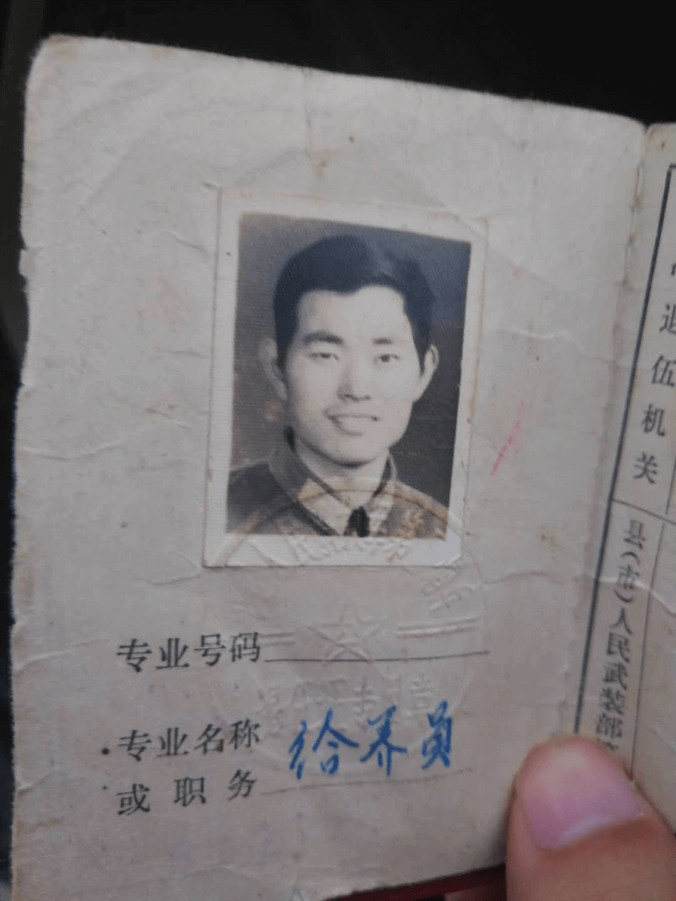亳州群康药业科技有限公司违法分包，工地现场安全措施不到位出现致人成植物人的责任事故，不仅不对安全责任事故进行总结反省和及时平复受害家属的情绪，及时妥善处理，反而相互推诿，推卸责任，不仅让受害家属在悲痛中受到二次伤害，还进一步激化社会矛盾。工地建设和承建单位是安徽群康药业科技有限公司、安徽泰源建筑工程有限公司，他们在施工管理以及施工过程中是否合法，有没有施工许可证，开工、验收手续是否齐全，有不合法律法规的地方，呼吁安监、规划、住建等有关部门进行调查、以及处理！呼吁有关部门协调解决受害者的医疗费